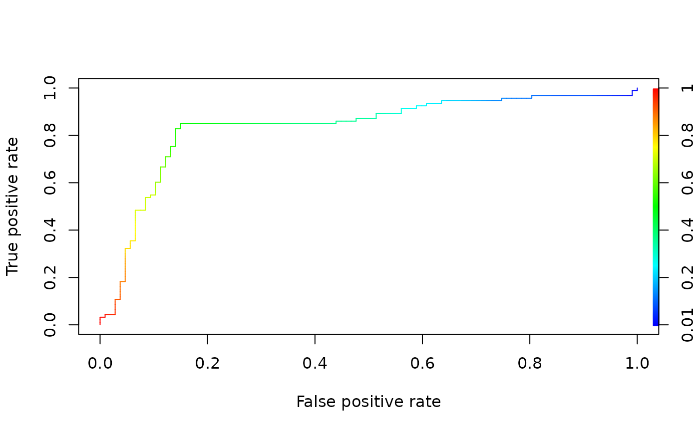

A mock data set containing a simple set of predictions and corresponding class labels.
data(ROCR.simple)
A two element list. The first element, ROCR.simple$predictions, is a
vector of numerical predictions. The second element,
ROCR.simple$labels, is a vector of corresponding class labels.
# plot a ROC curve for a single prediction run # and color the curve according to cutoff. library(ROCR) data(ROCR.simple) pred <- prediction(ROCR.simple$predictions, ROCR.simple$labels) pred#> A prediction instance #> with 200 data points#> A performance instance #> 'False positive rate' vs. 'True positive rate' (alpha: 'Cutoff') #> with 201 data points